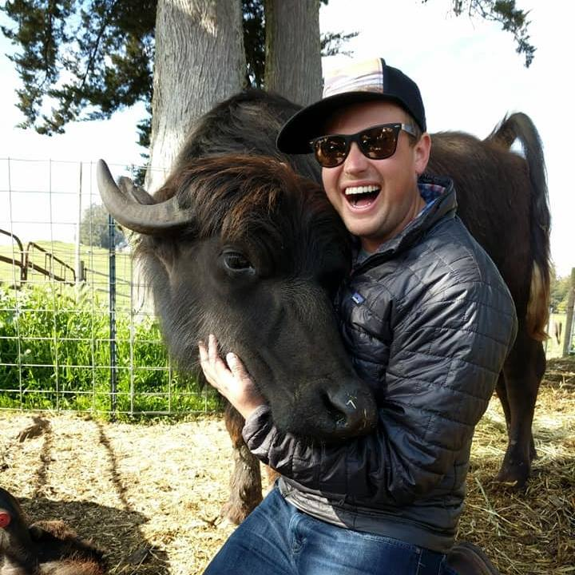

Hi! It's great to meet you. I'm Micah. I bring people and technology together to make good things happen.
At work, I'm building the modern financial benefit for frontline workers at Ezra. Prior to that, I looked after platform-wide safety product for Android, so your phone is there when you need it most. Before that, I led product and technical teams at Google.org, and started my career working on Google Search ranking. I created and teach a graduate engineering seminar on careers in product management at Columbia.
I can't resist a good adventure. I wrote my first webpage on a trip to visit my grandparents when I was 7. I deferred college admission for a year to run a Habitat for Humanity affiliate in rural Mississippi. I learned as much from my peers at Pomona as I did in class.
I believe that success in life, as in building things, is sweating in equal measure the big picture and the details, as much about what you do as how you do it. When I'm not making something, I love organizing wilderness adventures, dabbling in endurance sports, vaguely-planned international travel, flying airplanes, building community, simplifying finance, and soaking in hot water. My aim is to leave this place just a little bit better than I found it.
How about you?
